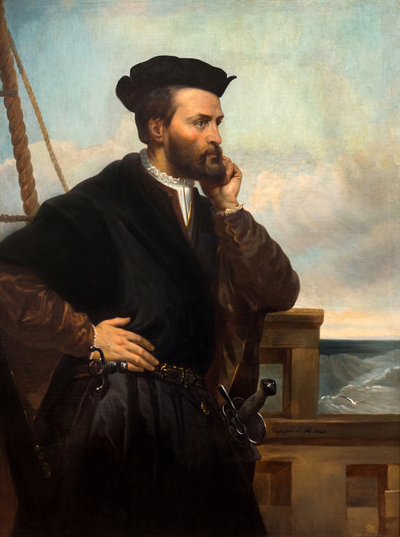
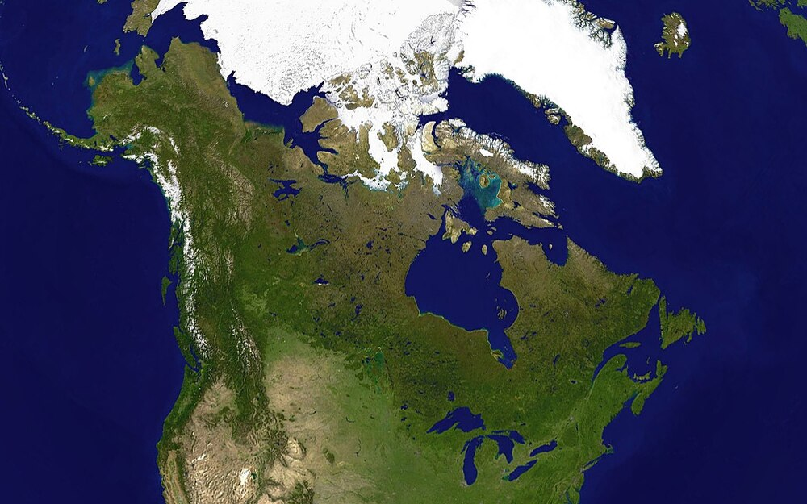
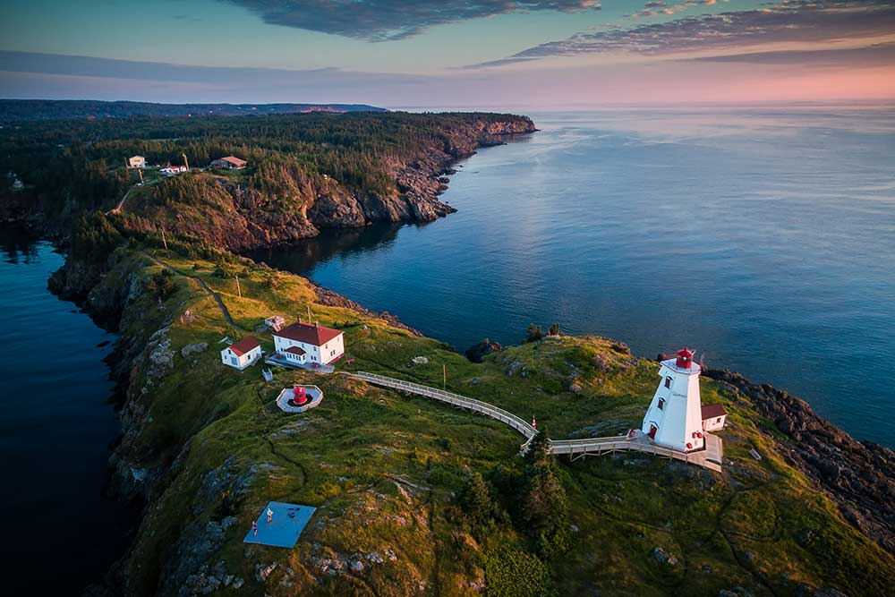
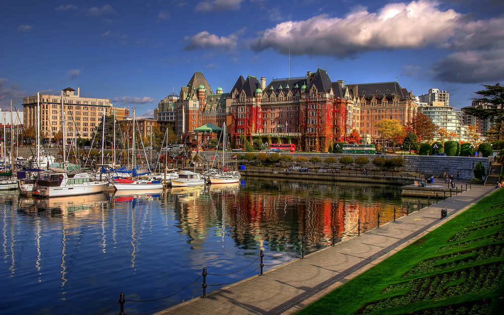

Етимологія
Назва країни, знаної нині як «Канада», походить від індіанського слова kanata, що означає «селище» або «поселення»: ще в 1535 корінні жителі сучасного міста Квебек користувались цим словом, коли йшла мова про індіанське селище Стадакона (Stadacona). Згодом словом Canada користувався французький мореплавець та дослідник Жак Картьє для позначення не лише індіанського селища, але й прилеглих до нього територій. А вже в 1545 в європейських книжках та мапах таки увесь регіон було прийнято звати «Canada».
Жак Картьє
З початку 17-го століття частина Нової Франції, у тому числі землі вздовж річки Св. Лаврентія і північних берегів Великих озер, також почали називати «Канадою», а згодом цей регіон був розділений на дві британські колонії, Верхню Канаду і Нижню Канаду, перш ніж у 1841 їх було опісля знову возз'єднано в одну британську провінцію Канада. За Конфедерації у 1867 назва Канада була прийнята як правова назва для нової країни,[8] і країні було надано статус домініону з назвою «Канада»: сам термін «Домініон Канада» увійшов у загальний вжиток до 1950-х років. А вже здобувши політичну незалежність від Великої Британії, федеральний уряд Канади дедалі частіше використовував назву «Канада» на державних документах і договорах: унаслідок цього державне свято країни перейменовано з «Дня Домініону» на «День Канади» в 1982.
Історія
Корінне населення
Археологічні й генетичні дослідження виявили присутність людини у північному Юконі 26 500 років тому і у південному Онтаріо 7500 років тому. Найдавнішими відомими місцями проживання людини у Канаді є рівнини Олд-Кроу і печери Блуфіш. Характерними рисами канадських аборигенних суспільств були осілість, ведення сільського господарства, складна суспільна ієрархія і торгові зв'язки. Деякі з цих культур занепали до моменту прибуття європейців наприкінці XV — на початку XVI століть і були відкриті тільки завдяки археологічним дослідженням.
За різними оцінками корінне населення наприкінці XV століття становило від 200,000 до двох мільйонів осіб, Королівська комісія Канади з охорони здоров'я аборигенів називає число 500,000 осіб. Внаслідок європейської колонізації корінні народи страждали від спалахів завезених інфекційних хвороб, таких як грип, кір і віспа (до яких у них був відсутній імунітет), за століття після прибуття європейців чисельність корінного населення зменшилась на 40—80 %. У теперішній час аборигенні народи Канади — це канадські індіанці, ескімоси і метиси. Метиси являють собою людей змішаної крові, які з'явилися в середині XVII століття, коли індіанці та ескімоси одружувалися з європейськими поселенцями. Загалом, ескімоси більше обмежували контакти з європейськими поселенцями протягом періоду колонізації.
Європейська колонізація
Першу відому спробу європейської колонізації зробили скандинави, коли близько 1000 року на певний час облаштувалися у Л'Анс-о-Медоузі, Ньюфаундленд. Подальших європейських розвідок не відбувалося до 1497 року, коли італійський мореплавець Джон Кабот досліджував канадське атлантичне узбережжя для Англії. На початку XVI століття вздовж атлантичного узбережжя баскські й португальські мореплавці запровадили сезонну риболовлю та полювання на китів. У 1534 році французький дослідник Жак Картьє розвідував долину річки Святого Лаврентія, де 24 липня встановив десятиметровий хрест із написом «Хай живе король Франції» і вступив у володіння територією ім'ям короля Франції Франциска I.
Французький дослідник Самюель де Шамплен прибув на ці території у 1603 році й створив перше постійне європейське поселення на території Порт Рояль у 1605 році й Квебек-сіті у 1608. Пізніше вони стали столицями Акаді й Канади, відповідно.
Канада в 1980—2015 роках
Неоконсервативний курс кабінету Малруні. На виборах 1984 року до влади прийшла Прогресивно-консервативна партія, та її лідер Б.Малруні сформував уряд консерваторів. Уряд Малруні здійснював неоконсервативний курс. Були розширені пільги для бізнесу, послаблений контроль держави за діяльністю підприємств з іноземним капіталом, державні корпорації переводилися на комерційну основу функціонування, була проведена ревізія тієї частини енергетичної програми, що обмежувала інтереси приватного бізнесу.
Прихід до влади лібералів. На виборах 1993 року перемогу одержала ліберальна партія на чолі з Ж. Кретьєном. Протягом наступних 10 років вищу виконавчу владу в країні здійснював очолюваний ним уряд лібералів.
Діяльність ліберальної партії будувалася з одного боку, на визнанні індивідуальних прав, свободи, ініціативи, підприємництва громадян, а з іншого — на значній ролі уряду у формуванні та здійсненні загальнодержавних програм. Ліберали приділяли велику увагу проблемі охорони здоров'я, рівності всіх етнічних і релігійних груп, питанням національної єдності.
У 2003 році Ж. Кретьєн добровільно залишив пост керівника партії і посаду прем'єр-міністра. Його наступником на цій посаді наприкінці 2003 року став новий лідер лібералів П. Мартін. З його ініціативи було продовження зниження податків для середніх верств населення, зниження боргового тягаря держави, збалансування бюджету. У 2004 році на парламентських виборах Ліберальна партія здобула перемогу над Консервативною партією, утвореною після об'єднання в 2003 році «Канадського альянсу» і Прогресивної консервативної партії, що дозволило П. Мартіну знову сформувати уряд.
Прихід до влади консерваторів. Ліберальна партія, що перебувала при владі 12 років, загрузла в корупції і численних скандалах. На нових виборах у 2006 році до влади прийшла Консервативна партія, її лідер С. Гарпер став новим прем'єр-міністром.
На парламентських виборах у 2008 році консерватори на чолі з С. Гапером знову здобули перемогу. Але до найбільшого успіху лідер консерваторів привів однопартійців у травні 2011 року, коли на позачергових виборах його партія здобула 166 місць у парламенті з 308. Сенсацією став провал лібералів, які відкотились на третє місце, пропустивши перед собою партію «Нових демократів». Лідер останньої Дж. Лейтон заявив про намір «Нових демократів» збільшити податки на великі корпорації, позбавити пільг нафтовидобувні компанії і почати регулювання банківського бізнесу. Водночас консерватори прагнуть продовжити підтримку великого бізнесу.
Знову ліберали. У 2015 році Ліберальна партія доволі несподівано знов здобула переконливу перемогу, яку на канадському політичному сленгу можна класифікувати як «обвал» англ. landslide, який дав можливість лібералам сформувати уряд більшості з 184 місцями (39,5 %) у парламенті. Аналізуючи виборчу кампанію, 43-річний Джастін Трюдо назвав причиною успіху лібералів їхні позитивні гасла, прагнення більшості канадців до змін та потребу більш енергійного лідерства.
Географія
Канада займає більшу частину півночі Північної Америки. Вона має загальний сухопутний кордон зі США на півдні і на північному заході (між Аляскою та Юконом) і простягнулася від Атлантичного океану на сході до Тихого на заході і Північного Льодовитого на півночі. Вона також має морський кордон з Францією (острови Сен-П'єр і Мікелон) і Данією (острів Гренландія). Найпівнічніше поселення в Канаді та у світі — Алерте, база збройних сил Канади на північному краю острова Елсмір (82,5˚ пн. ш., за 834 км від Північного полюса). Канада — друга за розміром країна світу. Державний кордон між Канадою та США є щонайдовшою загальною межею у світі завдовжки 8891 км.
Щільність населення, — близько 3,5 осіб на км², є однією з найнижчих у світі. Найбільш населена область країни — коридор Квебек — Віндзор уздовж рівнинних берегів річки Святого Лаврентія і на південному сході Великих озер.
На північ від цієї області знаходиться розлогий Канадський щит, скельний регіон, очищений останнім льодовиковим періодом, позбавлений родючих земель, багатий мінералами, озерами і річками. У Канаді більше озер, ніж у будь-якій іншій країні світу, вона володіє значними запасами прісної води. Найбільші озера: система Великих озер, Велике Ведмеже, Велике Невільниче, Вінніпеґ, Атабаска.
На сході Канади річка Святого Лаврентія впадає у затоку Святого Лаврентія, де знаходиться острів Ньюфаундленд, а острів Принца Едварда знаходиться на південь від нього. Нью-Брансвік і Нова Шотландія розділені затокою Фанді, яка знаменита найвищими припливами у світі. Ці чотири приморські провінції розташовані на схід від Квебеку. Онтаріо і Гудзонова затока розташовані в центрі Канади, тоді як від Манітоби на захід через Саскачеван і Альберту розкинулись на великих рівнинах канадські прерії аж до Скелястих гір, які відокремлюють їх від Британської Колумбії.
На північ від 60-ї паралелі розташовані три канадські території — Нунавут, Північно-західні території і Юкон — усіяні численними озерами (найбільші з яких Велике Ведмеже і Велике Невільниче) і перетнуті щонайдовшою річкою в країні — річкою Маккензі. До того ж, за континентальними землями Канадської Півночі ще далі на північ лежить великий архіпелаг, Канадський Арктичний архіпелаг, який включає деякі з найбільших островів світу. Протоками між цими островами проходить Північно-Західний прохід з моря Лабрадор до моря Бофорта, повз Баффінове море. Крім того, у цьому регіоні, між островами Королеви Єлизавети, знаходиться північний магнітний полюс.
Основну частину рельєфу країни займають рівнини прерій і плато Канадського щита з висотами 300—1500 м. На захід від прерій розташовуються континентальні низовини Британської Колумбії й Скелясті гори (частина Кордильєр, найвища точка — гора Лоґан), на сході, від півдня від Квебеку до приморських провінцій, підносяться Аппалачі. Гора Лоґан — найвища гора Канади та друга по висоті вершина в Північній Америці. Розташована в горах Святого Іллі, посеред національного парку Клуейн, на південному заході території Юкон, менш ніж за 40 км на схід від кордону з Аляскою, за 230 км на захід від містечка Вайтгорс та заввишки 5956 м над рівнем моря. Масив гори Логан вважається одним з найбільших у світі. Охоплення підошви гори перевищує 100 км.
Природа
Рослинність дуже різноманітна та істотно змінюється з півночі на південь. Полярні острови знаходяться в зоні, у якій поверхня землі вкрита вічними снігами і льодовиками, що не тануть навіть коротким літом. Баффінова земля та інші острови північного узбережжя Канади покриті тундрою, яка займає і всю північну материкову частину країни, проникаючи далеко на південь уздовж західного узбережжя Гудзонової затоки і на півострові Лабрадор. Тут ростуть вересові, осоки, чагарникова береза й верба. На південь від тундри між Тихим і Атлантичним океанами розкинулася широка смуга лісів. Переважають хвойні ліси; головні породи — чорна ялина на сході й біла ялина на заході (у долині річки Макензі), сосна, модрина, туя та інші породи. Менш поширені листяні ліси, що складаються з тополі, вільхи, берези і верби. Особливо різноманітні ліси в районі Великих озер (американський в'яз, веймутова сосна, канадська тсуга, дуб, каштан, бук). На тихоокеанському узбережжі поширені хвойні ліси з псевдотсуги, ситхинської ялини, аляскинського й червоного кедрів. Біля Ванкувера трапляється суничне дерево й орегонський дуб. У приморських приатлантичних провінціях — акадські ліси з бальзамічної ялиці, чорної й червоної ялини, також тут ростуть кедр, модрина американська, жовта береза, бук.
У зоні тундри водяться північний олень, полярний заєць, лемінги, песець і вівцебик. Південніше тваринний світ різноманітніший — північний олень, благородний олень, лось, в гірських районах — баран-товсторіг і снігова коза. Досить численні гризуни: вивірка, бурундук, американська літяга, бобер, стрибунка (вид тушканчиків), ондатра, дикобраз, а точніше голкошерст канадський, луговий і американський заєць, пискуха. З кішкоподібних для Канади характерні канадська рись і пума. Водяться вовки, лисиці, ведмідь-гризлі, єнот-полоскун. З куницевих — соболь, ілька, видра, росомаха. Багато перелітних птахів, що гніздяться тут. Фауна плазунів та земноводних небагата. У прісноводих водоймах багато риби.
Середні температури січня і липня розрізняються для кожної області. Зима може бути дуже суворою в деяких регіонах країни, середньомісячні температури можуть досягати 15 ˚С нижче за нуль навіть в південній частині країни, а іноді опускатися й до −40 ˚С з сильними крижаними вітрами. Рівень снігового покриву може досягати кількох сотень сантиметрів (наприклад, в Квебеку в середньому 337 см). Узбережжя Британської Колумбії, особливо острів Ванкувер, є винятком, тут клімат помірний, з м'якими дощовими зимами, а літні температури можуть досягати 35 ˚С.
Провінції Канади
Провінції Нью-Брансвік, Ньюфаундленд і Лабрадор, Нова Шотландія, Острів Принца Едуарда входять до складу регіону Атлантична Канада, який є батьківщиною Акадійской культури і славиться своїм унікальним акцентом, природними красотами (особливо в прибережних районах), історичної красою Галіфаксу, а також рибальської і судноплавної промисловістю.

Провінція Квебек - один з найбільш унікальних регіонів Канади. Квебек відомий великою
кількістю
культурних заходів, класичною архітектурою Монреаля і,
звичайно ж, своїм кленовим сиропом і
національним
блюдом «путін». Квебек - відмінний спосіб побачити Старий Світ Європи, не виїжджаючи за межі Північної
Америки.
Провінція Онтаріо - найбільша за чисельністю населення провінція Канади, що розташовує нескінченними можливостями для мандрівника: від найбільшого мегаполісу Канади Торонто до національної двомовної столиці країни Оттави, від Ніагарського водоспаду до величезної пустелі на півночі провінції і Великих озер.
Провінції Альберта, Манітоба та Саскачеван входять до складу Канадських прерій - регіону багатого географічної різноманітності - від пагорбів до ріпакових фермерських полів, лісів, озер і унікальних скельних утворень. Канадські Прерії - один з найбільш швидкозростаючих регіонів Канади і славиться своїми гірськолижними курортами Банф і Канмор.
Фото провінції Альберта
Фото провінції Манітоба
Фото провінції Саскачеван
Провінція Британська Колумбія є однією з найкрасивіших в Канаді, а серце її, місто Ванкувер - мабуть, одним з найліберальніших і культурно різноманітних міст Північної Америки.
